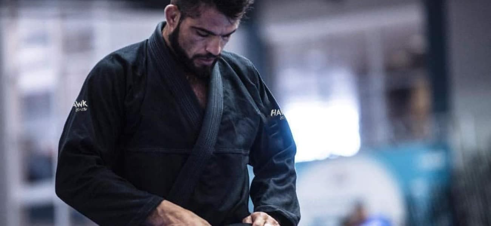
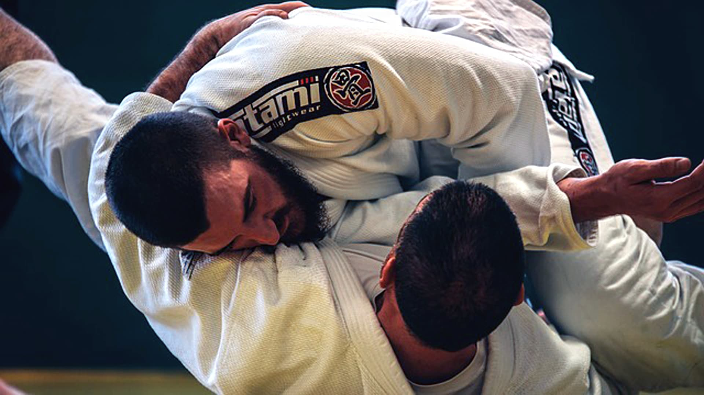
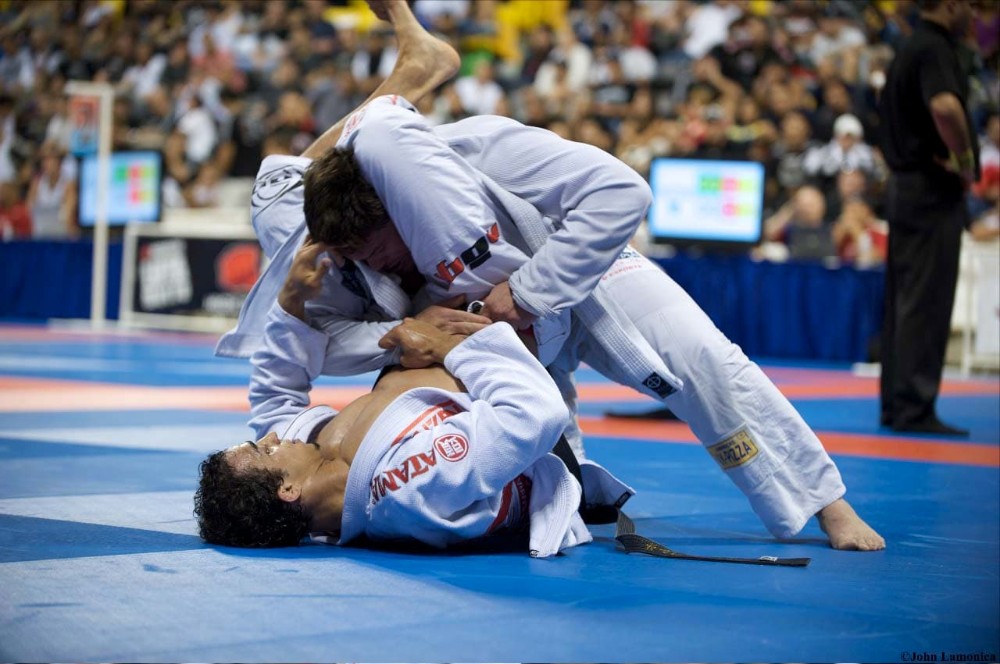
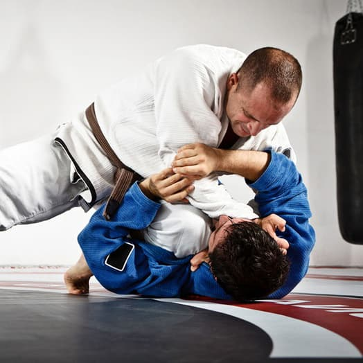
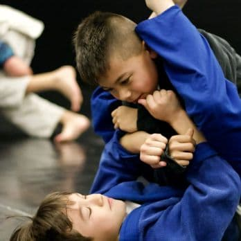
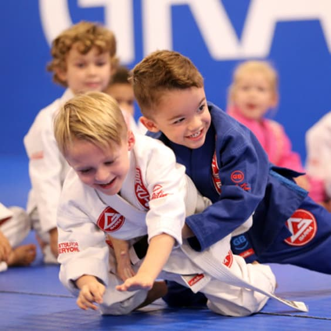
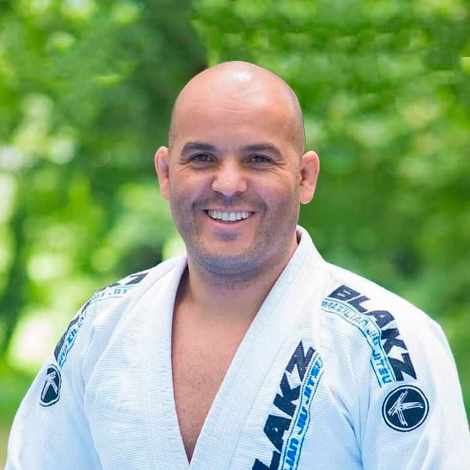
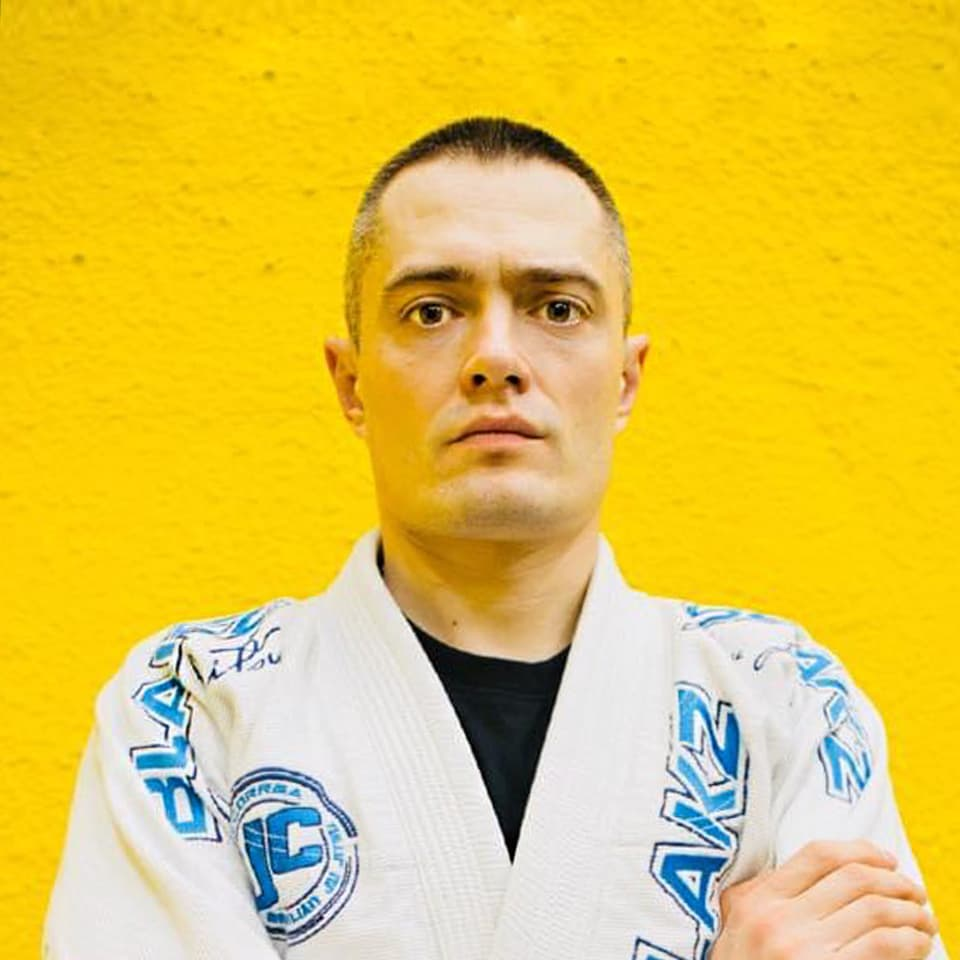
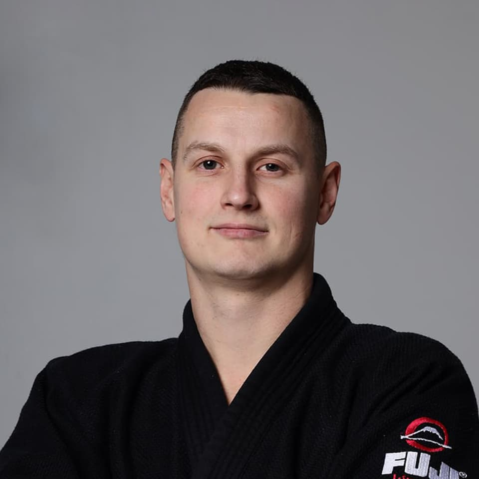
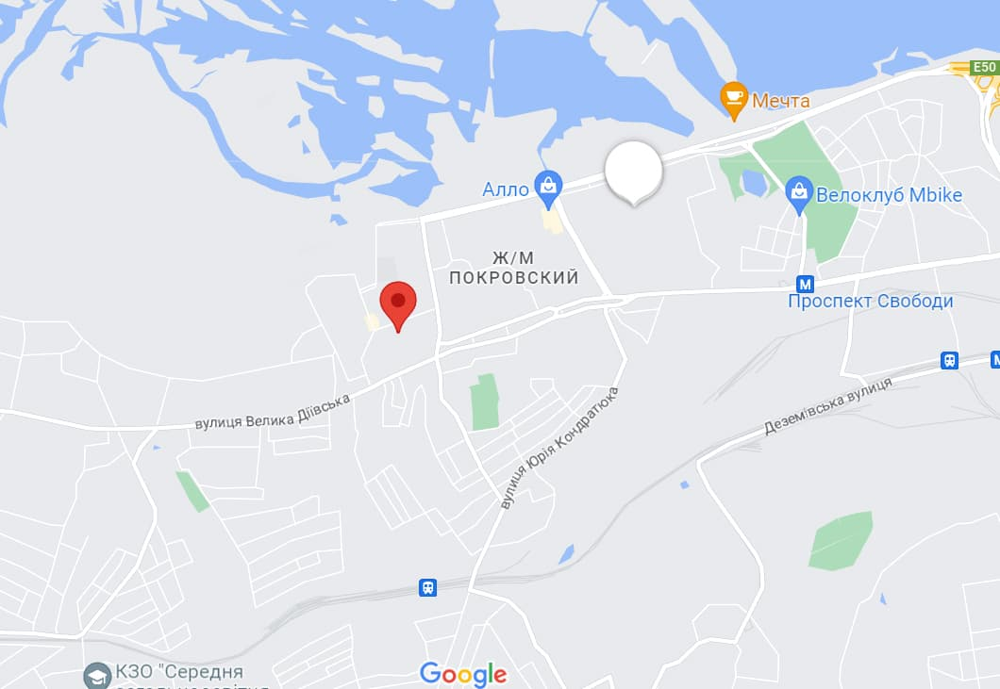

Школа Бразильського Джиу-Джитсу
Боротьба, тренування, навчання...
Джиу Джитсу - новий спосіб життя
-

Тренування по боротьбі це новий світ, який дійсно стає способом життя. Окрім нових технічних умінь, це ще чудовий спосіб покращити свою фізичну форму.
-

Бразильське Джиу-Джитсу це одна з ефективних систем самозахисту, якою може навчитися кожен, незалежно від статі, або віку.
-

Заняття проходять у дружній та здоровій атмосфері BJJ, де можна тренуватися для душі, а також, згодом, взяти участь у різних чемпіонатах України, Європи та Світу.
Групи
Почати освоювати Бразильське Джиу-Джитсу може кожен незалежно від статі. Тренування у групі діляться за віком:
-

Дорослі (18 – 49 років)
Ця вікова група є найцікавішою у Джиу Джитсу. Т.к. поєднує в собі як новачків, які прийшли здобути новий досвід, так і досвідчених борців, у яких можливо є за плечима досвід боротьби з Дзюдо, Вільної боротьби, Греплінга, ММА та BJJ, яким вони завжди діляться на тренуваннях.
-

Підлітки (11 – 17 років)
У цьому віці у спортсменів можна спостерігати явний технічний та фізичний прогрес. Заробляючи досвід у сутичках на змаганнях, які регулярно проходять в Україні та за її межами, підліток застосовує отримані на тренуваннях знання, на практиці, зміцнюючи дух, характер та тіло.
-

Діти (4 – 10 років)
Найкращий вік дітей для початку занять спортом. Завдяки тренуванням з молодого віку, у дитини формується самодисципліна. А розвиток координації, сили, витривалості та концентрації допоможуть стати успішним спортсменом і не давати себе в образу.
Бажаєте спробувати?
Просто залиште свій номер, ми Вам передзвонимо...
Тренера
Академія BLAKZ BJJ Ukraine є представництвом міжнародної школи з вивчення бразильського Джиу-Джитсу – BLAKZ Team, яка має Офіційний Статус Члена Міжнародної Федерації Бразильського Джиу-Джитсу IBJJF (International Brazilian Jiu Jitsu Federation)
-

Jair Corrêa
Школа BLAKZ була заснована prof. Jair Correa de Magalhaes (чорний пояс, четвертий дан з BJJ), який нині є її безпосереднім керівником.
-

Валентин Вареніков
Керівник BLAKZ Team Ukraine, чорний пояс по Бразильському Джиу-Джитсу
-

Максим Шилін
Керівник та головний тренер школи BLAKZ Team у Дніпрі
Ціни
Ми пропонуємо різні варіанти оплати:
Птиання / Відповідь
- Чого можна очікувати від першого тренування?
- Не хвилюйтеся, перше тренування - пробне, ознайомлювальне, без високих кидків і падінь, тому Ваше завдання просто зрозуміти, чого хочете від тренувань саме ВИ. На перший погляд може здатися, що Бразильське Джиу-Джітсу агресивний вид спорту, але насправді практикуючі BJJ – дружня компанія. І можливо Ви скоро станете одним із них.
- Що мені вдягнути? Мені потрібний гі (кімоно)?
- У нас у клубі тренування проходять як у Гі (Gi – кімоно для Bjj), так і без Гі (No Gi – компресійний одяг для Bjj). Тому, не маючи поки що таких, Ви можете відвідати перші кілька уроків в іншій спортивній формі, наприклад, у футболці та шортах.
- Чи є правила, які мені потрібно знати?
- Це швидше кілька порад. Завжди беріть із собою, на тренування воду та змінне взуття. Намагайтеся, щоб Ваша форма для тренувань була охайна та чиста. Дотримуйтесь елементарних правил гігієни, з метою безпеки тримайте нігті короткими, знімайте пірсинг, кільця, сережки та ланцюжки. При вході та виході до зали завжди робіть поклон. Розвивайте повагу до себе та інших. І будь ласка, НІКОЛИ не заходьте на мати взутими!
Наші зали знаходяться у різних районах міста
Просто оберіть який Вам ближчий...
class="team-list">-

пров. Євгена Коновальця, 6 ( Центр )
Графік : ✅Понеділок✅Середа✅П'ятниця 19.00 - 21.00
-
Валентин Вареніков
Керівник BLAKZ Team Ukraine, чорний пояс по Бразильському Джиу-Джитсу